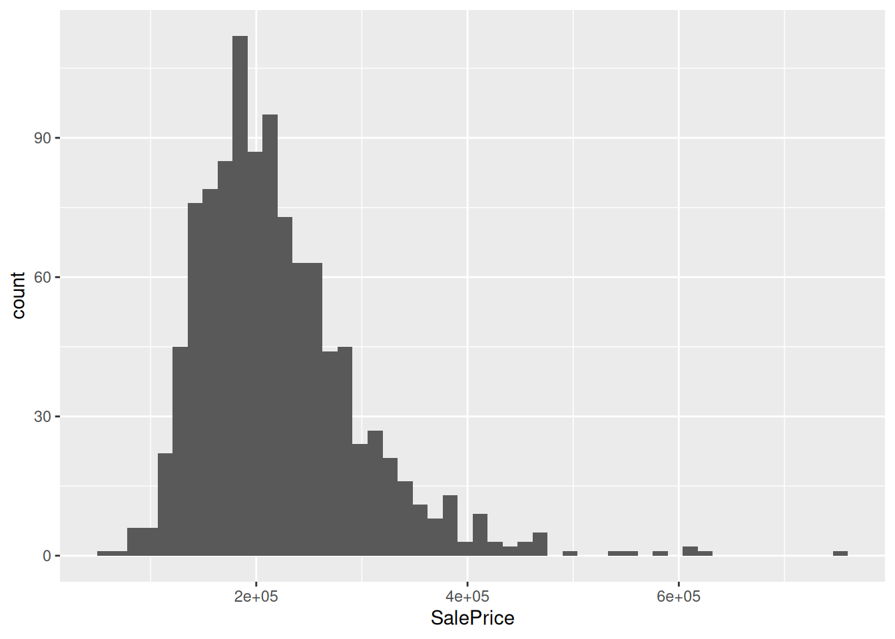
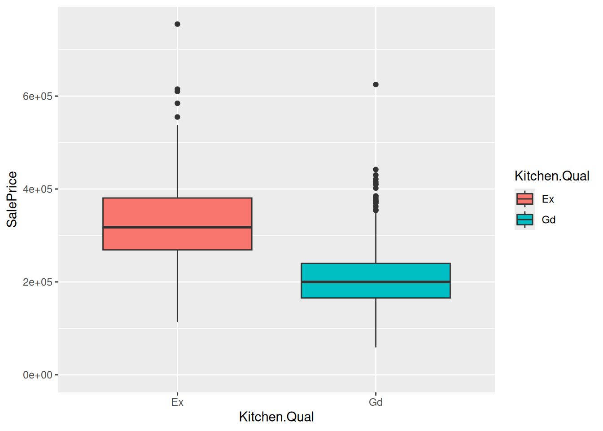
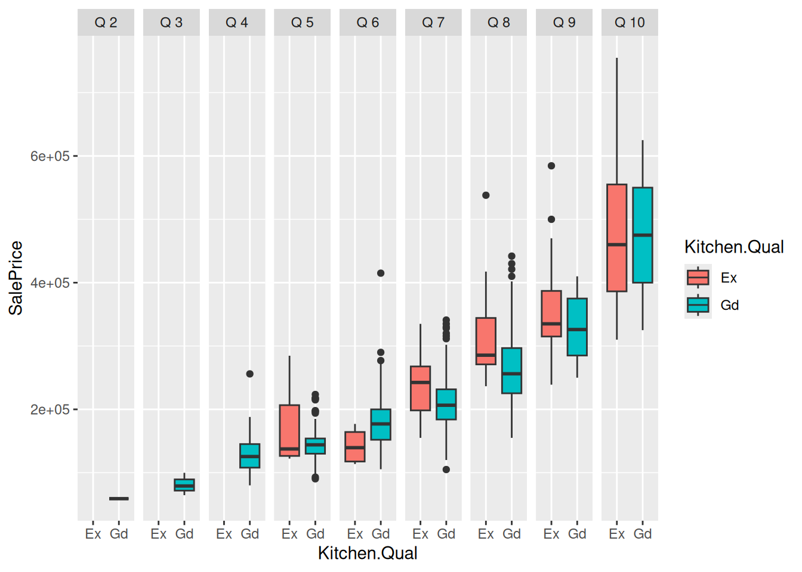

── Attaching core tidyverse packages ──────────────────────── tidyverse 2.0.0 ──
✔ dplyr 1.1.4 ✔ readr 2.1.5
✔ forcats 1.0.0 ✔ stringr 1.5.1
✔ ggplot2 3.5.1 ✔ tibble 3.2.1
✔ lubridate 1.9.4 ✔ tidyr 1.3.1
✔ purrr 1.0.2
── Conflicts ────────────────────────────────────────── tidyverse_conflicts() ──
✖ dplyr::filter() masks stats::filter()
✖ dplyr::lag() masks stats::lag()
ℹ Use the conflicted package (<http://conflicted.r-lib.org/>) to force all conflicts to become errors
Attaching package: 'gridExtra'
The following object is masked from 'package:dplyr':
combineMultilinear regression as loss minimization.
Goals
- Adding regressors based on discrete random variables
- The one-hot encoding trick
- Sample means and one-hot encoding
- Adding interactions to fit different slopes
Reading
These notes are supplementary for the reading
Ames housing data
Let’s consider an example of the Ames housing data, restricted to normal sales condition and considering only residential sales with either good or excellent condition kitchens. I’ll be particularly interested in whether there’s evidence that the cost of a kitchen upgrade is reflected in the sale value of the house.
housing_dir <- file.path(root_dir, "datasets/ames_house/data")
ames_orig <- read.table(file.path(housing_dir, "AmesHousing.txt"), sep="\t", header=T)
ames <- ames_orig %>%
filter(Sale.Condition == "Normal",
# remove agricultural, commercial and industrial
!(MS.Zoning %in% c("A (agr)", "C (all)", "I (all)"))) %>%
filter(Kitchen.Qual %in% c("Gd", "Ex")) %>%
mutate(Overall.Qual=factor(Overall.Qual))
ggplot(ames) +
geom_histogram(aes(x=SalePrice), bins=50)
Here’s a histogram of the sales price:
ames %>%
ggplot() +
geom_boxplot(aes(x=Kitchen.Qual, y=SalePrice, fill=Kitchen.Qual))+
expand_limits(y=0)
The average difference between Excellent and Good kitchens is $119179, which is a huge amount of money. However, this difference mostly vanishes when we look only at differences within “Overall Quality:”

How can we study this using regression? Note that “Kitchen Quality” and “Overall Quality” are discrete variables. Here, they do have an ordering, but suppose we just want to treat them as distinct categories — in this way, we can learn how to account for other discrete variables, such as neighborhood, that are harder to visualize.
One–hot encodings
How can we use categorical variables in a regression? Suppose we have a columns \(k_n \in \{ g, e\}\) indicating whether a kitchen is “good” or “excellent”. A one–hot encoding of this categorical variable is given by
\[ \begin{aligned} x_{ng} = \begin{cases} 1 & \textrm{ if }k_n = g \\ 0 & \textrm{ if }k_n \ne g \\ \end{cases} && x_{ne} = \begin{cases} 1 & \textrm{ if }k_n = e \\ 0 & \textrm{ if }k_n \ne e \\ \end{cases} \end{aligned}. \]
We can then regress \(y_n \sim \beta_g x_{ng} + \beta_e x_{ne} = x_n^\intercal\boldsymbol{\beta}\). The corresponding \(\boldsymbol{X}\) matrix might look like
\[ \begin{aligned} \boldsymbol{k} = \begin{pmatrix} g \\ e \\ g \\ g \\ \vdots \end{pmatrix} && \boldsymbol{X}= (\boldsymbol{x}_g \quad \boldsymbol{x}_e) = \begin{pmatrix} 1 & 0 \\ 0 & 1 \\ 1 & 0 \\ 1 & 0 \\ \vdots \end{pmatrix} \end{aligned} \]
Note that \(\boldsymbol{x}_g^\intercal\boldsymbol{x}_g\) is just the number of entries with \(k_n = g\), and \(\boldsymbol{x}_g^\intercal\boldsymbol{x}_e = 0\) because a kitchen is either good or excellent but never both.
We then have
\[ \boldsymbol{X}^\intercal\boldsymbol{X}= \begin{pmatrix} \boldsymbol{x}_g^\intercal\boldsymbol{x}_g & \boldsymbol{x}_g^\intercal\boldsymbol{x}_e \\ \boldsymbol{x}_e^\intercal\boldsymbol{x}_g & \boldsymbol{x}_e^\intercal\boldsymbol{x}_e \\ \end{pmatrix} = \begin{pmatrix} N_g & 0 \\ 0 & N_e \\ \end{pmatrix}. \]
Then \(\boldsymbol{X}^\intercal\boldsymbol{X}\) is invertible as long as \(N_g > 0\) and \(N_e > 0\), that is, as long as we have at least one observation of each kitchen type, and
\[ \left(\boldsymbol{X}^\intercal\boldsymbol{X}\right)^{-1} = \begin{pmatrix} \frac{1}{N_g} & 0 \\ 0 & \frac{1}{N_e} \\ \end{pmatrix}. \]
Similarly, \(\boldsymbol{x}_g^\intercal\boldsymbol{Y}\) is just the sum of entries of \(\boldsymbol{Y}\) where \(k_n = g\), with the analogous conclusion for \(\boldsymbol{x}_e\). From this we recover the result that
\[ \hat{\boldsymbol{\beta}}= (\boldsymbol{X}^\intercal\boldsymbol{X})^{-1} \boldsymbol{X}^\intercal\boldsymbol{Y} = \begin{pmatrix} \frac{1}{N_g} & 0 \\ 0 & \frac{1}{N_e} \\ \end{pmatrix} \begin{pmatrix} \sum_{n: k_n=g} y_n \\ \sum_{n: k_n=e} y_n \end{pmatrix} = \begin{pmatrix} \frac{1}{N_g} \sum_{n: k_n=g} y_n \\ \frac{1}{N_e} \sum_{n: k_n=e} y_n \end{pmatrix}. \]
If we let \(\bar{y}_e\) and \(\bar{y}_g\) denote the sample means within each group, we have shows that \(\hat{\beta}_g = \bar{y}_g\) and \(\hat{\beta}_e = \bar{y}_e\), as we proved before without using the matrix formulation.
Ames example
Note that we get the same thing by just computing means and running a regression in the Ames data:
ames %>%
group_by(Kitchen.Qual) %>%
summarize(mean_price=mean(SalePrice)) %>%
pivot_wider(names_from=Kitchen.Qual, values_from=mean_price) %>%
print()# A tibble: 1 × 2
Ex Gd
<dbl> <dbl>
1 327007. 207828.reg <- lm(SalePrice ~ Kitchen.Qual - 1, ames)
print(coefficients(reg))Kitchen.QualEx Kitchen.QualGd
327006.5 207828.0 And when we look at the model matrix for the regression, we see the one-hot encoding in action:
x <- model.matrix(SalePrice ~ Kitchen.Qual - 1, ames)
bind_cols(
select(ames, Kitchen.Qual),
x) %>%
head(10) Kitchen.Qual Kitchen.QualEx Kitchen.QualGd
1 Gd 0 1
2 Ex 1 0
3 Gd 0 1
4 Gd 0 1
5 Gd 0 1
6 Gd 0 1
7 Gd 0 1
8 Gd 0 1
9 Gd 0 1
10 Ex 1 0What if we included a constant?
reg_const <- lm(SalePrice ~ Kitchen.Qual, ames)
print(coefficients(reg_const)) (Intercept) Kitchen.QualGd
327006.5 -119178.5 You will show in your homework that these two regressions are equivalent, but that the interpretaion of their coefficients is different. In this case, the equivalence is clearest from the prediction function:
reg <- lm(SalePrice ~ Kitchen.Qual - 1, ames)
reg_const <- lm(SalePrice ~ Kitchen.Qual, ames)
good_df <- data.frame(Kitchen.Qual="Gd")
ex_df <- data.frame(Kitchen.Qual="Ex")
cat("Estimated difference without regressing on a constant: ",
predict(reg, ex_df) - predict(reg, good_df), "\n")Estimated difference without regressing on a constant: 119178.5 cat("Estimated difference regressing on a constant: ",
predict(reg_const, ex_df) - predict(reg_const, good_df), "\n")Estimated difference regressing on a constant: 119178.5 The key is to interpret the coefficients by plugging in multiple values and seeing what the fitted model predicts. Depending on how you set up your regression, this may or may not correspond to a particular coefficient value!
Controlling for multiple variables
We can now regress on kitchen quality “controlling for” overall quality (scare quotes intentional). One way to do this is to regress on one-hot indicators for both:
reg_qual <- lm(SalePrice ~ Overall.Qual + Kitchen.Qual, ames)
print(coefficients(reg_qual)) (Intercept) Overall.Qual3 Overall.Qual4 Overall.Qual5 Overall.Qual6
89395.19 22100.00 73468.42 86982.22 119942.62
Overall.Qual7 Overall.Qual8 Overall.Qual9 Overall.Qual10 Kitchen.QualGd
150197.56 206392.52 266350.76 392470.83 -30395.19 Note that the increase in sales price associated with an Excellent kitchen is much lower after you control for overall quality of the house in this way. It appears that much of the difference in cost in the above regression may be attributed to correlation between kitchen quality and overall house quality.
Note that the above regression assumes that the “effect” of overall quality is the same irrespective of the kitchen quality. We could run a regression with all the interactions to separately estimate the change in kitchen quality for each house quality. This is what actually corresponds to the graph above:
reg_qual <- lm(SalePrice ~ Overall.Qual * Kitchen.Qual - 1, ames)
print(summary(reg_qual))
Call:
lm(formula = SalePrice ~ Overall.Qual * Kitchen.Qual - 1, data = ames)
Residuals:
Min 1Q Median 3Q Max
-168246 -29701 -4211 22776 276754
Coefficients: (3 not defined because of singularities)
Estimate Std. Error t value Pr(>|t|)
Overall.Qual2 62246 59361 1.049 0.294604
Overall.Qual3 84346 45100 1.870 0.061737 .
Overall.Qual4 135715 37507 3.618 0.000311 ***
Overall.Qual5 169931 16713 10.168 < 2e-16 ***
Overall.Qual6 142425 23636 6.026 2.33e-09 ***
Overall.Qual7 239900 13646 17.580 < 2e-16 ***
Overall.Qual8 311166 9271 33.565 < 2e-16 ***
Overall.Qual9 355043 6493 54.679 < 2e-16 ***
Overall.Qual10 478246 13111 36.478 < 2e-16 ***
Kitchen.QualGd -3246 35905 -0.090 0.927979
Overall.Qual3:Kitchen.QualGd NA NA NA NA
Overall.Qual4:Kitchen.QualGd NA NA NA NA
Overall.Qual5:Kitchen.QualGd -20254 39849 -0.508 0.611362
Overall.Qual6:Kitchen.QualGd 41057 43112 0.952 0.341146
Overall.Qual7:Kitchen.QualGd -27466 38491 -0.714 0.475649
Overall.Qual8:Kitchen.QualGd -44328 37218 -1.191 0.233910
Overall.Qual9:Kitchen.QualGd -23061 39172 -0.589 0.556178
Overall.Qual10:Kitchen.QualGd NA NA NA NA
---
Signif. codes: 0 '***' 0.001 '**' 0.01 '*' 0.05 '.' 0.1 ' ' 1
Residual standard error: 47270 on 1041 degrees of freedom
Multiple R-squared: 0.9598, Adjusted R-squared: 0.9592
F-statistic: 1657 on 15 and 1041 DF, p-value: < 2.2e-16The problem is these are extremely variable. Using additive effects can be thought of smoothing out the data so you can do “as-if” comparisons within a particular bucket.
References
Ding, Peng. 2024. “Linear Model and Extensions.” arXiv Preprint arXiv:2401.00649.
Gelman, Andrew, Jennifer Hill, and Aki Vehtari. 2021. Regression and Other Stories. Cambridge University Press.